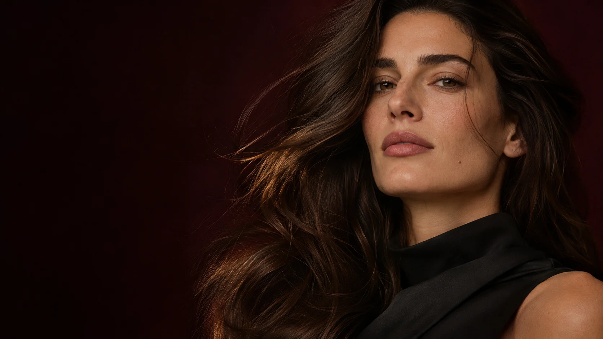

Коллекция настроений MUSEСмотреть фильм
Ваше время. Ваш характер.Красота
от студии 007-A
Красота
вашего
характера.
Волосы, цвет и детали,
в которых вы узнаёте себя.
от студии 007-A
Философия MUSE
Самая красивая
версия — ваша.
Чуть смелее цвет. Чуть короче чёлка. Или просто любимая укладка в день, который хочется посвятить себе.
Здесь образ начинается с разговора: как вы живёте, что любите и сколько времени готовы проводить у зеркала.
Меню красоты
У каждого — своя история.
Что вам к лицу?
Выберите направление.У каждого — своя история.
 Форма. Текстура. Цвет.
Форма. Текстура. Цвет.MUSE в движенииПочувствуйте
Почувствуйте
настроение.
Волосы, цвет и свет.
Четыре настроения одной истории.
Смена настроенияСегодня
Листайте — настроение меняется
Сегодня
я смелая.
Медный оттенок. Чистая линия. Новое ощущение себя.
Ателье MUSEМесто для
Место для
вашего времени.
Тёплый свет. Большое зеркало. Разговор, который помогает услышать себя. Мы придумали пространство, где у красоты есть свой ритм.
Заглянуть в ательеВаш личный референс
Сохраните ощущение.
Нажмите на кадр,
чтобы рассмотреть детали.
Визуальная коллекция концепта. Образы созданы для проекта и не являются фотографиями выполненных услуг.